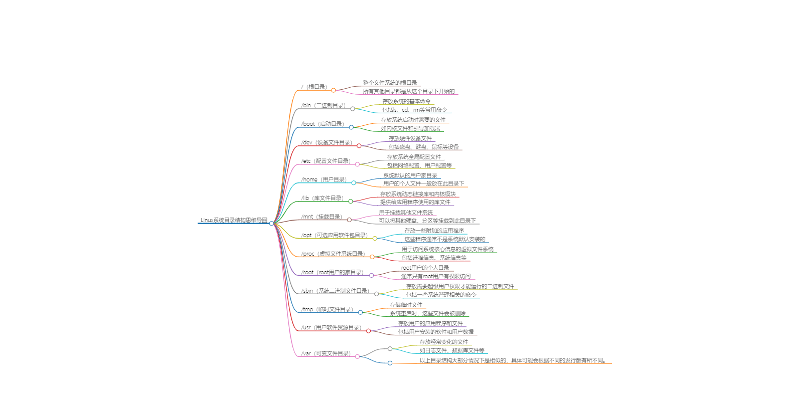

Linux系统介绍
Linux目录介绍
Linux系统的目录结构是一种树状结构，以下是一些主要的目录及其用途：
/：这是整个文件系统的根目录。所有其他目录都是从这个目录下开始的。/bin：二进制目录，存放系统的基本命令，如ls、cd、rm等。/boot：启动目录，存放系统启动时需要的文件，如内核文件和引导加载器。/dev：设备文件目录，存放硬件设备文件。/etc：配置文件目录，存放系统全局配置文件。/home：用户目录，系统默认的用户家目录，用户的个人文件一般放在此目录下。/lib：库文件目录，存放系统动态链接库和内核模块。/mnt：挂载目录，用于挂载其他文件系统。/opt：可选的应用软件包目录，一些附加的应用程序会放在这里。/proc：虚拟文件系统目录，用于系统核心，例如进程和系统信息。/root：root用户的家目录。/sbin：系统二进制文件目录，存放需要超级用户权限才能运行的二进制文件。/tmp：临时文件目录，存储临时文件，系统重启时，这些文件会被删除。/usr：用户软件资源目录，存放用户的应用程序和文件。/var：可变文件目录，存放经常变化的文件，如日志文件。
以上目录结构大部分情况下是相似的，具体可能会根据不同的发行版有所不同。

Linux重启&关机
在Linux下，你可以使用以下命令来重启或关机：
重启：
sudo reboot这个命令会立即重启系统。sudo shutdown -r now这个命令也会立即重启系统，其中-r指的是reboot。sudo init 6这个命令会立即重启系统，其中6是runlevel，代表重启。sudo systemctl reboot这个命令也会立即重启系统，它是Systemd的命令。
关机：
sudo halt这个命令会关闭系统但不断电。sudo poweroff这个命令会关闭系统并断电。sudo shutdown -h now这个命令会立即关闭系统，其中-h指的是halt。sudo init 0这个命令会立即关闭系统，其中0是runlevel，代表关机。sudo systemctl poweroff这个命令也会立即关闭系统，它是Systemd的命令。
如果你想在特定的时间关机或重启，你可以将now替换为具体的时间，例如sudo shutdown -h 20:00会在今天20:00关机。
init 介绍：
从上面的命令我们可以看到init不仅可以重启，还可以关机，都是通过不同的数字编号来的，哪是否还有其他编号，代表不通的意思呢？
Linux系统的初始化级别（init level）有以下几种：
- 0级别： 关机状态，此时系统完全关闭。
- 1级别： 单用户模式，也叫救援模式或者单人维护模式，只有超级用户root可以登录，用于系统维护。
- 2级别： 多用户模式，但是不含NFS服务，这个级别不常用。
- 3级别： 完全的多用户文本模式，包括了网络服务，用户可以登陆并进行操作，但是没有图形界面。
- 4级别： 保留级别，空闲状态，没有定义任务，根据系统或用户需要自定义。
- 5级别： 图形模式，图形化的多用户模式，有图形界面，用户登录后进入图形界面。
- 6级别： 重启模式，此时系统会进行重启。
可以使用 init 命令更改运行级别，例如 init 0 会把系统更改为关机状态，init 6 会重启系统。在/etc/inittab文件中可以设置系统的默认运行级别。不过，现在很多Linux系统（如Ubuntu和CentOS 7及以上版本）已经使用Systemd来代替System V init，因此运行级别的概念已经被“目标”（target）所替代。